3.2 Data cleaning
Data cleaning is an essential process of identifying and correcting inconsistencies and inaccuracies within a dataset. This process improves the quality, accuracy and reliability for the data. In fact, a data analyst spends a lot of time on preparing the data for analysis. It is very rare that the raw data is in the correct format and without any errors.
Data cleaning is the process of transforming raw data into consistent data that can be analysed.
To ensure that the data set is cleaned and refined before starting an analysis is crucial to assure that the analysis is accurate and therefore that better-informed decisions can be deduced from the analysis. When statistical analysis is performed on data that isn’t properly cleaned, the integrity of the results and findings are compromised and not trustworthy.
Therefore, the analysis is only as reliable as the data that is used for the analysis, making data cleaning an essential step.
The specific data cleaning techniques that one will use always depends on the application at hand and the analysis needed. Here is a list of some data cleaning techniques:
Removing the data that is not necessary for your analysis.
Identifying and removing observations that are duplicated.
Correcting typing errors, errors in capitalisations or inconsistent naming conventions.
Removing or imputing missing data.
Encoding categorical data either to or from a numerical format.
Ensuring that the data is in a consistent format.
3.2.1 Example: Data cleaning in Excel
You are given a data set containing information on employees working at Orion Sales. This data set is named orion_sales_staff.xlsx. Once you have opened the data set in Excel, you come across some problems with the data set that requires data cleaning.
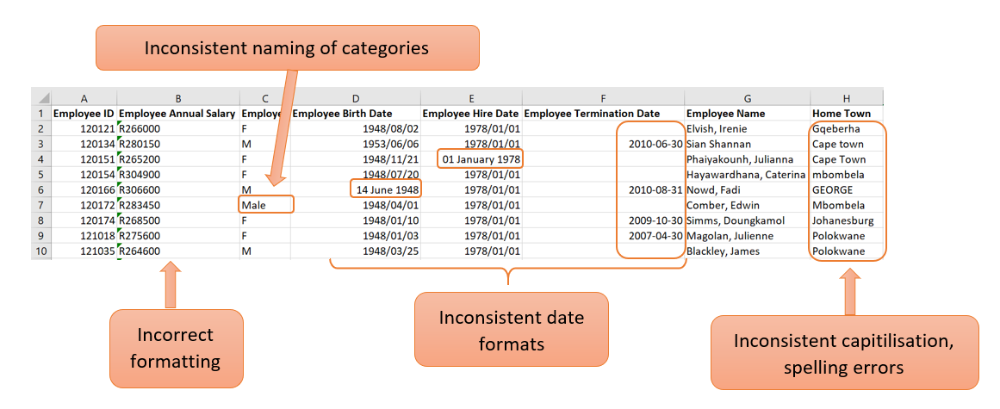
Correct the formatting of a cell
In the example above, the values in the “Employee Annual Salary” column are seen as text. This is clearly visible with the left alignment of the values in the cell. Because annual salary is a numerical value, the formatting needs to be corrected so that Excel can handle the values as numbers.
This can be corrected with the following steps:
- If you click in the cell, there will be a yellow block with an exclamation mark on the left.
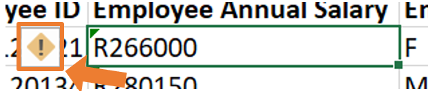
- By clicking on the warning sign, a dropdown list will open where you can choose the option “Convert to Number”.
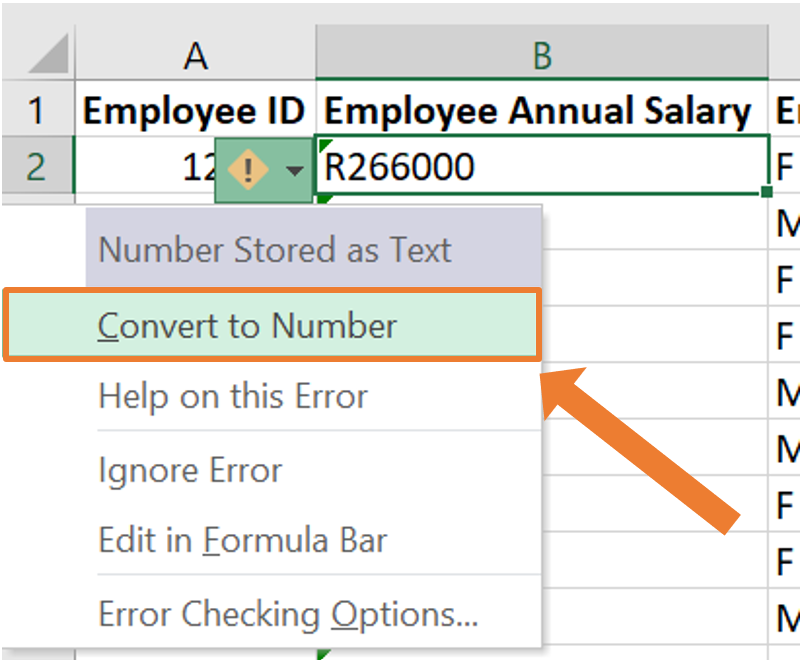
- Now the cell’s formatting will be corrected. This can be seen by the value being right aligned within the cell.
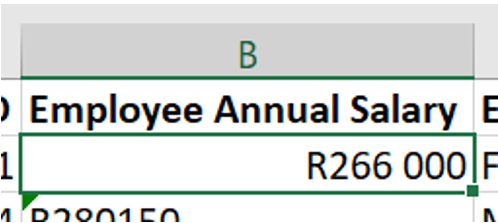
- To do this for an entire column, The same procedure can be followed by highlighting all the cells that need to be changed.
This process will automatically change the format of the cells from text to “currency”. If you work with this data set in Excel, this formatting will be sufficient as Excel knows how to work with this. If the data set is imported into another statistical program (which you will be familiarised later on), the format of this column needs to be “Number” instead of “Currency”.
This can be done by navigating to the “Number” group on the Home tab in Excel and opening the dropdown list. From this dropdown list, the appropriate formatting can be selected which is “Number” in this case.
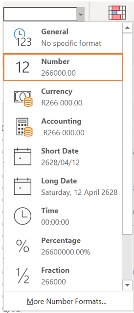
Inconsistent naming of categories
In column C of the example above, the categories are not named consistently. This column consists of the gender of each employee. By glancing at the screenshot of the first few lines of the data, it can be seen that the categories are labelled as “M” (for male) and “F” (for female). However, in line 7, the entry is “Male”. There can be more occurrences like this further in the data. Having inconsistent naming of categories is not ideal as this will cause problems when you start to work with the data. For example, when constructing frequency tables or barplots.
This can be corrected with the following steps:
- Select all the columns of the data set. In the “Editing” group on the “Home” tab, click on “Sort & Filter” and then on “Filter. This will allow you to filter the data by a specific column.
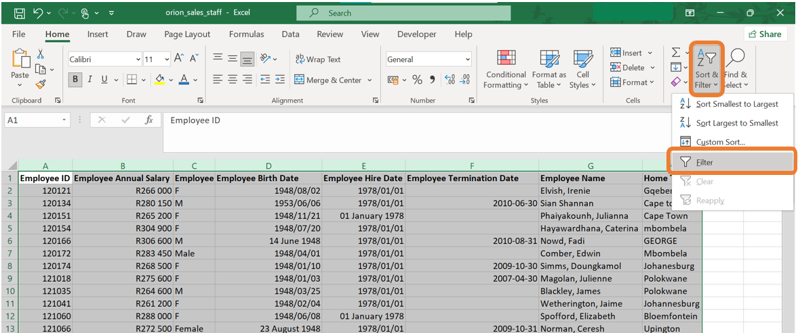
- The filter icon will now be next to each column name. When clicking on the item next to the column name you would like to filter on, a menu will open up. On this menu, you have the ability to sort the data by this column or filter certain categories. In the screenshot below, all the categories are ticked meaning that all the observations of the data set will be displayed. In the example below, it can be seen that there are categories named “M”, “F”, “Male” and “Female”. We would like to change all the observations with category “Female” to “F” and all the observations with category “Male” to “M”.
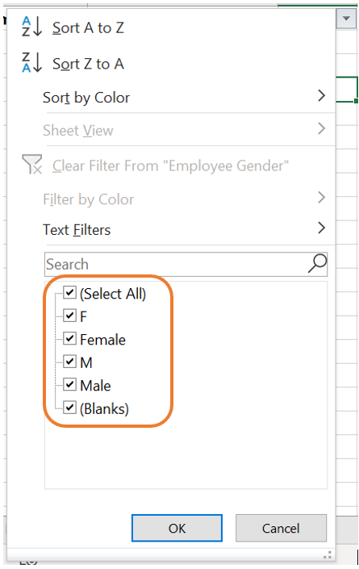
- When removing the tick marks of all the categories except one, only the observations from the specific category will be displayed. In our case, let us first filter all the observations where the gender is indicated as “Female”.
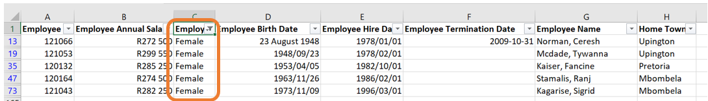
- Having all the observations filtered out, you can manually change the categories to “F”.
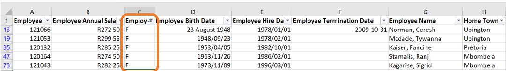
- The came can be done for the males. Again, click on the filter icon next to the column name. Remove the tick marks of all the categories except the one with “Male”.
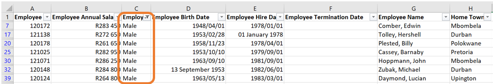
- Then, manually change the categories to “M”.
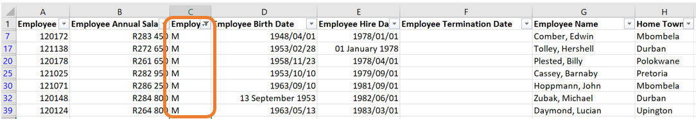
Inconsistent capitalisations
In the column named “Home Town”, there are a few observations where the name of the town is written in all capital letters, all small letters or the second word is written with a small letter instead of a capital letter.
The best and quickest way to correct this is to create a new column and use built-in Excel functions to do the correction. Let us call this column “Home Town cleaned”.
Next, we will introduce three new functions that will alter how the names of the towns are written.
- The first function is
=UPPER(). This function will return the word in the selected cell written in all capital letters.
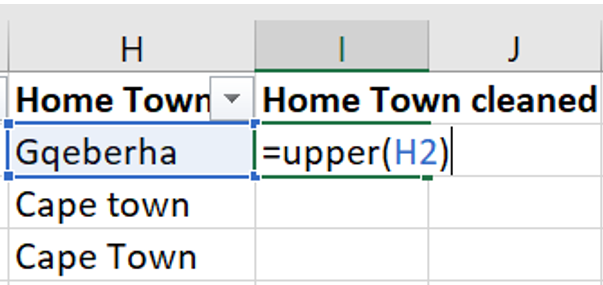
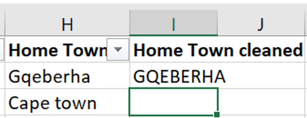
- The second function is
=LOWER(). This function will return the word in the selected cell written in all lower case letters.
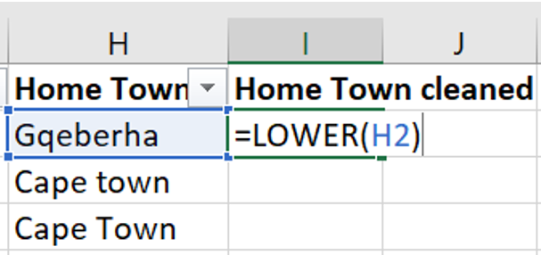
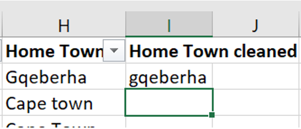
- The third function is
=PROPER(). This function will return the word in the selected cell where the first letter of each word is written in a capital letter followed by lower case letters.
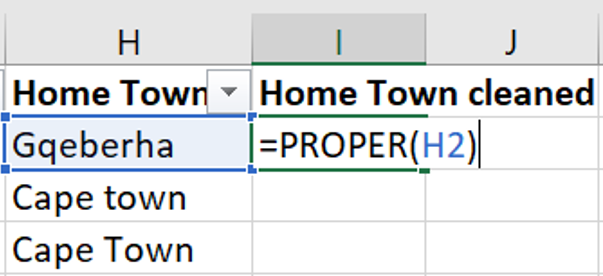
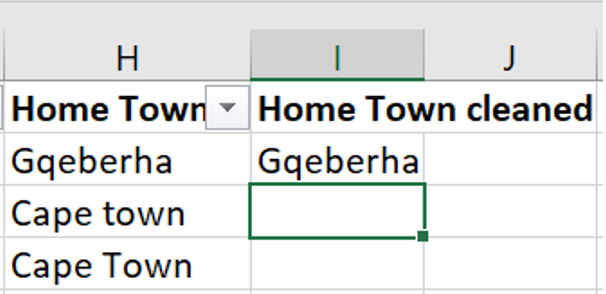
In the same column, some of the town names are misspelled. This can be corrected similarly to how you corrected the inconsistencies in the category names.
Correcting the date format
The columns “Employee Birth Date”, “Employee Hire Date” and “Employee Termination Date” are examples of columns containing dates.
The dates can be corrected by selecting all the columns containing dates, then selecting the “short date” format on the drop-down list in the “Number” group on the “Home tab.
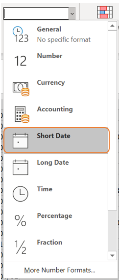
3.2.2 Missing data
Missing data occurs when there is no value for a variable of a certain observation. This is a common issue in data analysis and can arise for various reasons. Missing data can have a significant effect on data analysis and conclusions drawn from such analysis.
Missing data often results from non-response. For example, in a survey, a respondent may leave a question unanswered. This usually happens in the case of sensitive information such as salary. Another reason for missing data is caused by errors made by the researcher during data collection or entry.
Types of missing data:
Missing completely at random (MCAR): With this type of missing data, the probability of an observation being missing is entirely random and independent of any other variable in the data set. For example, at the end of a customer service call, customers might be asked to complete a satisfaction survey. Some individuals may choose not to respond which causes missing data.
Missing at random (MAR): With this type of missing data, the probability of an observation being missing depends on the values of other variables in the data set but not the missing variable itself. For example, after visiting a dermatology clinic, customers might be asked to fill in a survey on their gender and skincare routine. If females are more likely to respond, the missing data can be explained by the gender of the individual.
Missing not at random (MNAR): With this type of missing data, the probability of a data point being missing is related to the missing value itself. For example, some individuals might prefer not to answer sensitive information on a survey such as their salary.
Some methods for handling missing data:
Imputation: In some cases, the missing data can be replaced with estimated values. Some common approaches include filling in missing values with the mean, median or mode of the variable.
Interpolation: This method of handling missing data is to fill in missing data based on the adjacent datapoints. This is a popular method to use in time series data.
Deletion: In some cases, it may be appropriate to remove the variable entirely from the analysis when the variable has a high proportion of missing values. Another method is to delete an entire observation if one or more of the variables contains missing data.
Model-based approaches: With this method predictive models are used to impute the missing values in the data set based on other variables in the data set.
When working with data that contains missing values, caution should always be taken. The type of missing data as well as the analysis at hand should guide the data analyst on how to handle the missing data.
3.2.2.1 Example
You are given a data set called Diabetes Missing Data.xlsx which contains vital measurements of 30 patients. Some of the data is missing and you are required to explore this in Excel.
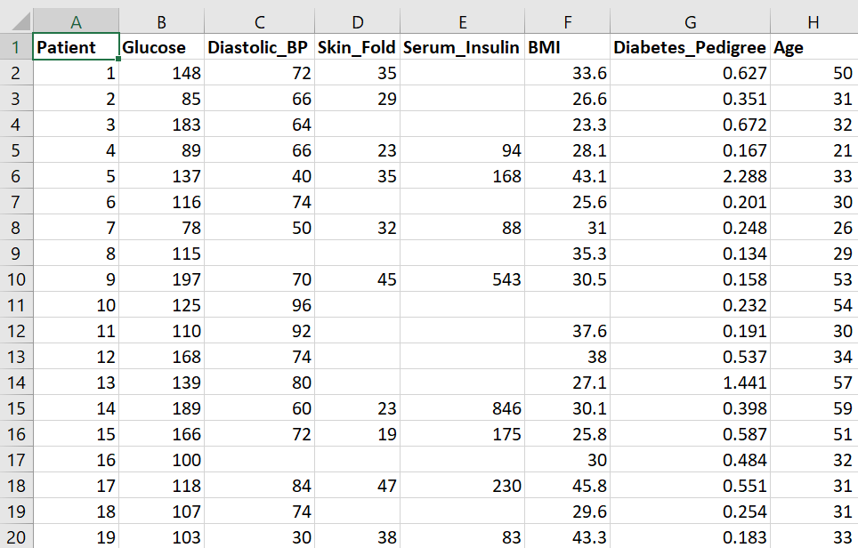
Filter a column for missing values
Missing values can be represented in various ways, such as NA, N/A or as a blank cell.
In this example, we will filter the Diastolic_BP column to display only the observations with missing values for this variable. Follow these steps:
- Select all the columns of the data set. In the Editing group on the Home tab, click on Sort & Filter and then on “Filter”. This will allow you to filter the data by a specific column.
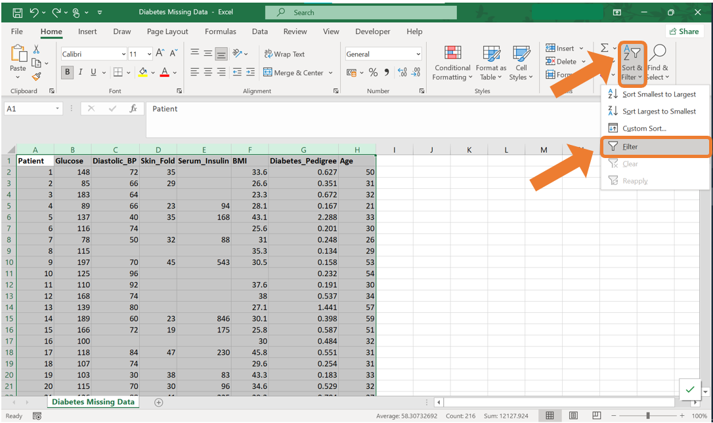
- Click on the Filter icon next to the column name which will open up a menu. Untick all the tick boxes except the one labelled “(blank)”. Then click OK.
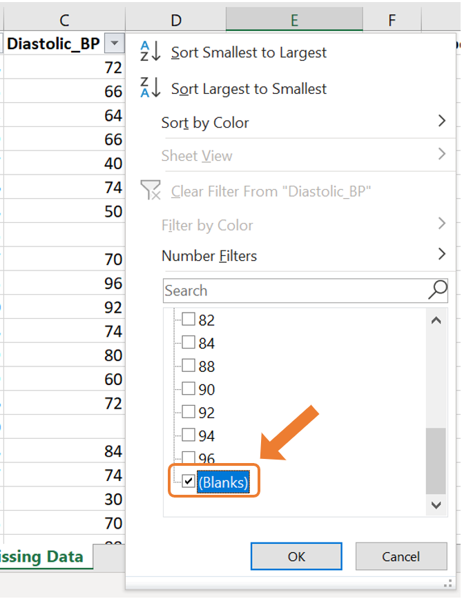
- This will then only display the observations with a missing value for this variable.
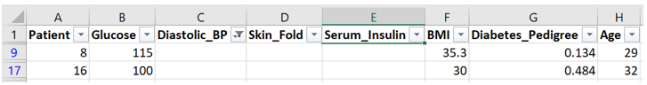
Use conditional formatting to highlight cells with missing values
In the case where you simply want to highlight the cells with missing values, conditional formatting can be used. For this example, we will highlight the missing values in the Skin_Fold variable. Follow these steps:
- Select the column on which you want to apply the conditional formatting. Navigate to the Home tab, click on Conditional Formatting and choose New Rule.
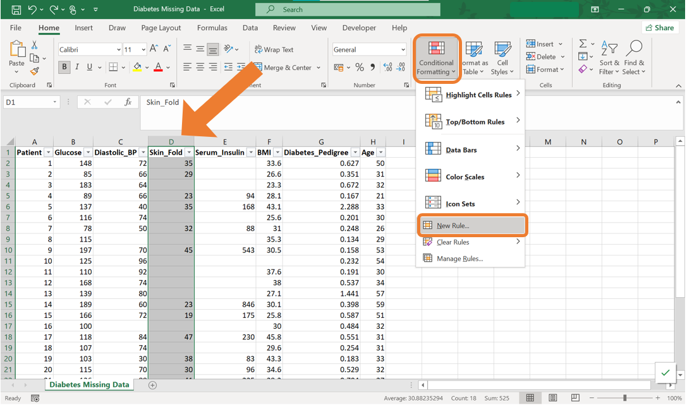
- In the New Formatting Rule dialog box, select Format only cells that contain. Then at the dropdown menu under Format only cells with:, select “Blanks”. By clicking on the Format button, you can specify the formatting style for the highlighted cells.
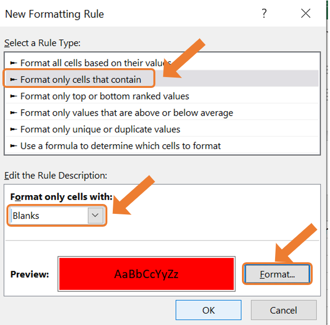
- As a result, all the cells with missing values will be highlighted.
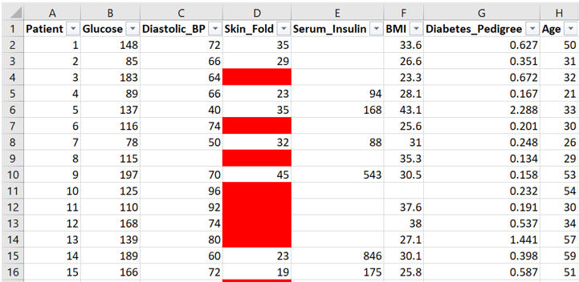
Find and replace missing values
When you want to replace all the missing values of a certain variable with the same value, Find & Replace can be used. In this example, replace all the missing values from the Serum_Insulin variable with the word “Missing”. Follow the following steps:
- Select the desired column. Navigate to the Home tab, click on Find & Select and choose Replace.
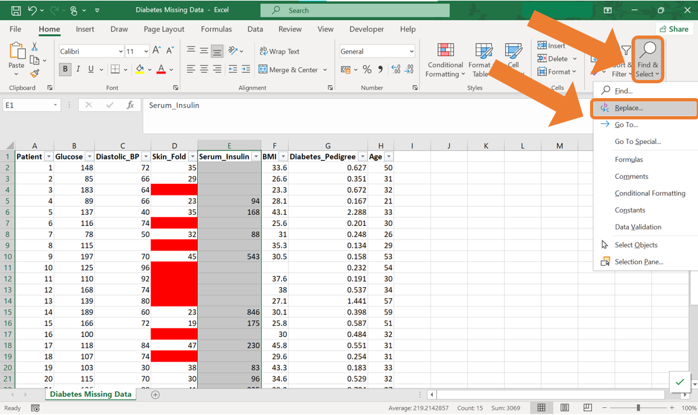
- In the Find & Replace dialog box, leave the Find what field blank to target all blank cells. Enter the word “Missing” in the Replace with field. Click on Replace All to apply this change to the entire column.
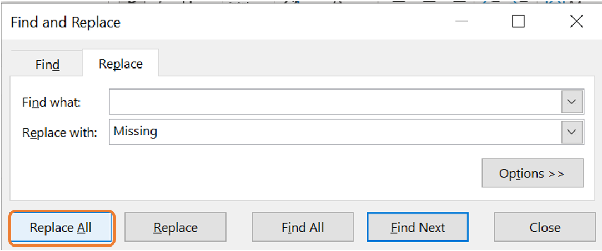
- As a result, all the cells that were empty previously will now contain the word “Missing”.
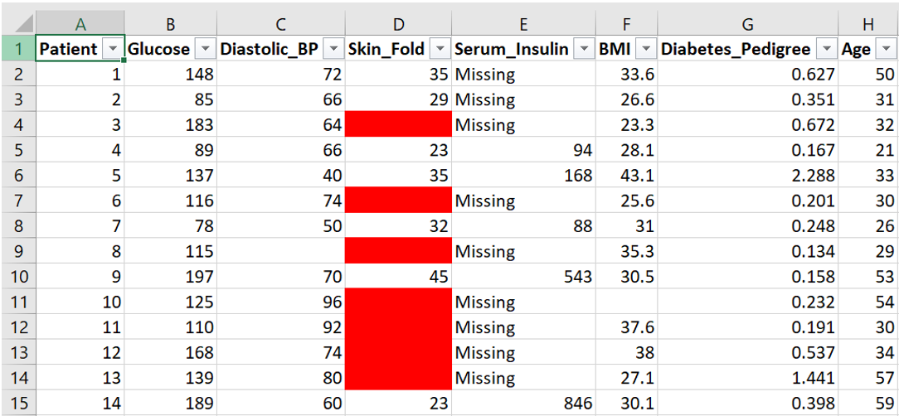
3.2.3 Duplicate values
When working with a real-world data set, you may encounter duplicated records. Such records do not provide additional information and can slow down the analysis process or lead to inaccuracies. Therefore, it is best to remove such observations.
To remove duplicated rows in Excel, the following steps can be followed:
- Select the entire data set in Excel. Navigate to the Data tab and in the Data Tools group, click on the Remove Duplicates icon.
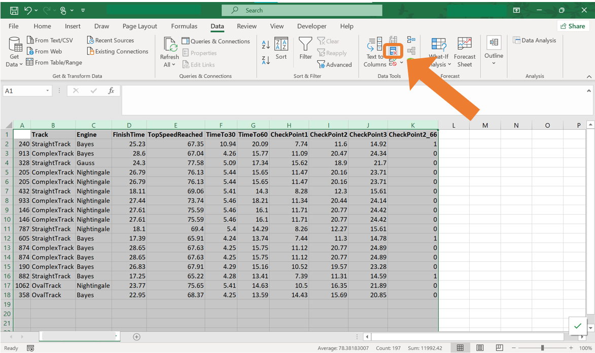
- In the Remove duplicates dialog box, you can select the columns where duplicates should be identified. In most cases, it will be appropriate to select all the columns to ensure rows are entirely unique. Click OK to remove all the duplicates.
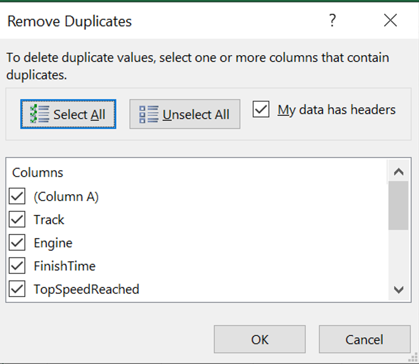
3.2.4 Exercises
Explain why data cleaning is an essential step for the analysis.
What are the common types of issues that you can encounter in a real-word data set?
Why is it necessary to remove duplicate records?
List some data cleaning techniques and provide an example of where such technique might be necessary.
Name the functions in Excel that can be used to change the capitilisation of words in Excel.
Why is it important to standarise text entries (for example, converting “Yes” and “yes” to the same format) in a data set? Can you think of an example where inconsistencies in text entries can affect analysis?
What are some common reasons for missing data in a data set? Provide some examples of where missing data occurs.